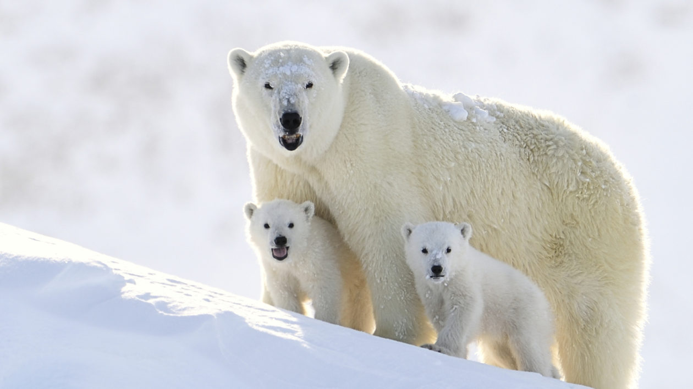

Other Habitats
Click for home page.

The Arctic Habitat
Polar Bears
Polar bears are classified as marine animals. Because they spend most of their lives on the sea ice of the Arctic Ocean depending on the ocean for their food and habitat, polar bears are the only bear species to be considered marine mammals. Polar bears are actually black not white.Polar bear fur is translucent, and only appears white because it reflects visible light. Beneath all that thick fur, their skin is jet black. Polar bears can swim constantly for days at a time.As well as reaching speeds of up to 6mph in the water, polar bears can swim for long distances and steadily for many hours to get from one piece of ice to another. Their large paws are specially adapted for swimming, which they’ll use to paddle through the water while holding their hind legs flat like a rudder.less then 2% of polar bear hunts are successful. Although about half of a polar bear’s life is spent hunting for food, their hunts are rarely successful. Polar bears main prey consists of ringed seals and bearded seals, though they will also scavenge carcasses or settle for small mammals, birds, eggs and vegetation. There are as many as 19 subpopulations of Polar Bears. The total population of approximately 26,000 wild polar bears are divided into 19 units or subpopulations. Of these just 1 subpopulation is increasing, 5 are stable and 4 are in decline. The remaining 9 have not been assessed as they are data deficient – we simply don’t have enough information about them to know how they’re doing. Male polar bears can weigh up to 800kg, and are twice the size of females. This, in addition to the fact that they can measure up to 3 metres long, makes polar bears the largest land carnivore in the world. Polar bears have a very strong sense of smell, which they use to find seal breathing holes in the ice. Once it has found the hole, the bear will wait patiently until the seal comes up for air to attack. They can even detect a seal in the water beneath a metre of compacted snow.